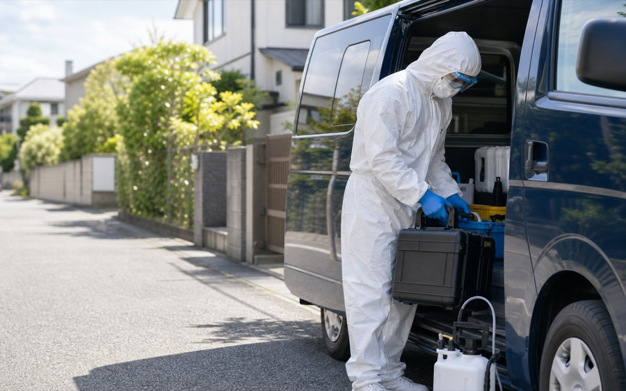
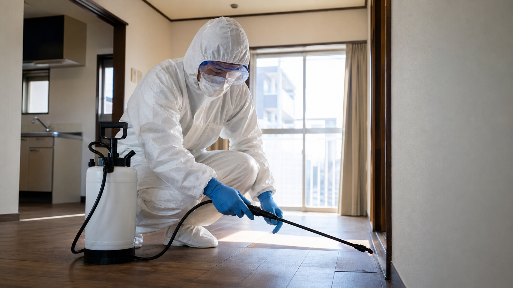

自社調べ／2026年6月時点
特殊清掃なら○○株式会社。特殊清掃を最安値で即日解決します。
どのような現場でも、特殊清掃専門スタッフが
24時間365日
相談0円
出張0円
見積0円
即日対応をお約束いたします！
実績・信頼
突然の現場にも、 最短即日で 向き合います。
ご遺族、不動産オーナー、管理会社様へ。 清掃から消臭・原状回復まで 一括で対応します。
深夜・早朝もご相談可能
加盟店ネットワークで出動

見積り後の追加請求なし
作業前に内容と金額を説明。納得いただいてから着手します。
近隣に配慮した静かな作業
必要に応じて社名の出ない車両で訪問。ご事情を厳守します。
加盟スタッフが最寄りから急行
加盟店ネットワークを活用し、最短その日に現地確認します。

対応サービス
特殊清掃から復旧まで、 必要な作業を一括で。
どこに頼めばよいか分からない状態でも、 まずは分かる範囲でお聞かせください。

01
特殊清掃
孤独死、事故・事件現場の清掃
02
汚染物撤去
体液・血液の撤去、殺菌・消毒
03
消臭脱臭
しみついたニオイを原因から対処
04
害虫駆除
発生状況に合わせた駆除と再発抑制
05
遺品整理
遺品整理、残置物撤去、買取相談
06
原状回復
床・壁・設備の回復工事まで対応
07
火災・水害復旧
すす落とし、除湿、清掃、消臭まで一括対応
よくある不安
初めてのことで、 不安なのは当然です。
見積もりだけでも大丈夫ですか？
はい。ご相談、出張、見積りは無料です。金額に納得できない場合はお断りいただけます。
あとから料金が増えませんか？
作業前に金額を確定します。見積り後の追加費用はありません。
近所に知られず依頼できますか？
可能な範囲で車両や服装、作業時間に配慮します。ご連絡内容も厳守します。
管理会社からの依頼もできますか？
賃貸物件、オフィス、店舗も対応します。法人後日請求もご相談ください。
ご依頼の流れ
ご連絡から、 最短その日に現場へ。
電話またはWEBで状況をご相談
分かる範囲で構いません。現場の状態とご希望を伺います。
加盟スタッフが最寄りから訪問
作業内容、費用、日程を明確に説明。無理な営業はしません。
納得いただいてから清掃・復旧へ
特殊清掃、消臭、撤去、原状回復まで必要な作業を進めます。
お客様の声
突然の出来事に向き合った お客様から。
公開時は、実際のお客様から掲載許諾を得た声に差し替えてください。 特殊清掃は機微情報のため、匿名化と地域ぼかしが必要です。
60代男性・ご遺族
離れて暮らす兄の部屋で相談。費用を先に説明してもらえ、落ち着いて任せられました。
40代女性・賃貸オーナー
消臭から内装回復まで一社で完結。次の募集までの段取りが早く進みました。
50代女性・ご遺族
近隣に知られたくない事情に配慮。静かに作業してもらえて安心しました。
無料相談
特殊清掃は、 時間が経つほど 負担が増えます。
ニオイ、害虫、原状回復の 負担が大きくなる前に。 24時間365日、無料で ご相談を受け付けています。